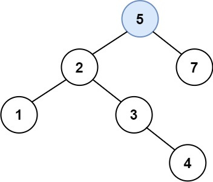

701. 二叉搜索树中的插入操作
迭代沿 BST 下行走到空位，把新结点挂上去就完事——树的其余部分原样不动。
思路
- BST 找插入位置和查找一样：比当前小走左、大走右，走到
null的地方就是它该在的空位。 - 挂结点前看一眼：该方向孩子为空才挂，不为空就继续往下走（迭代时手动记这一步）。
- 新结点永远是叶子，树不旋转、不重构，原根就是新根。
- 递归写法同理但每层压栈 O(h)；迭代只有几个变量，空间 O(1)。
图解
最优解
1class Solution {2 public TreeNode insertIntoBST(TreeNode root, int val) {3 if (root == null) return new TreeNode(val);4 TreeNode cur = root;5 while (true) {6 if (val < cur.val) {7 if (cur.left == null) { cur.left = new TreeNode(val); break; } // 空位就在这8 cur = cur.left;9 } else {10 if (cur.right == null) { cur.right = new TreeNode(val); break; }11 cur = cur.right;12 }13 }14 return root; // 原树只在空位上挂了一个叶子，根不变15 }16}题目
给定二叉搜索树（BST）的根节点 root 和要插入树中的值 value ，将值插入二叉搜索树。 返回插入后二叉搜索树的根节点。 输入数据 保证 ，新值和原始二叉搜索树中的任意节点值都不同。
注意，可能存在多种有效的插入方式，只要树在插入后仍保持为二叉搜索树即可。 你可以返回 任意有效的结果 。
示例 1：

输入：root = [4,2,7,1,3], val = 5 输出：[4,2,7,1,3,5] 解释：另一个满足题目要求可以通过的树是：
示例 2：
输入：root = [40,20,60,10,30,50,70], val = 25 输出：[40,20,60,10,30,50,70,null,null,25]
示例 3：
输入：root = [4,2,7,1,3,null,null,null,null,null,null], val = 5 输出：[4,2,7,1,3,5]
提示：
- 树中的节点数将在
[0, 104]的范围内。 -108 <= Node.val <= 108- 所有值
Node.val是 独一无二 的。 -108 <= val <= 108- 保证
val在原始BST中不存在。
题面取自力扣当前版本。
数据快照 2026-11-04。题面版权归力扣所有，本站点仅供本人学习使用，请勿对外发布。